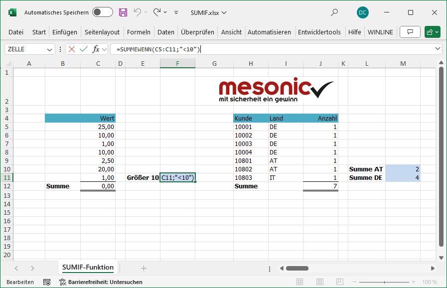
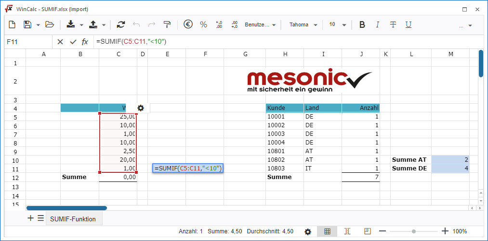

Über die folgenden Formatierungsbuttons kann das CalcSheet ex- bzw. importiert werden, sofern es sich nicht um ein WinCalc innerhalb des Cockpits oder des Power Reports handelt.
Buttons "Ex- und Import"
Ø Exportieren
Mit Hilfe dieses Buttons kann das CalcSheet nach Windows exportiert werden. Die Auswahl des Formats kann über den rechten Bereich des Buttons erfolgen:
ü WinCalc-Datei
Der Export
erfolgt als "WinCalc-Arbeitsblatt (.wcs), welches das Windowsformat des WinCalcs
darstellt. D.h. alle Funktionen und Objekte werden in der Datei gespeichert.
ü Excel-Datei
Der Export erfolgt
als "Microsoft Excel-Arbeitsblatt" (.xlsx). Hierbei ist folgendes zu
beachten:
ü Es werden die ersten 10.000 Zeilen des CalcSheets an Microsoft Excel übergeben.
ü Alle WinLine Funktionen werden aufgelöst übergeben, d.h. nur das Ergebnis der Funktion.
ü Bei Objekten des Typs Link wird nur der Link-Text übertragen.
ü Bei Objekten des Typs Datenüberprüfung wird nur der Inhalt der Zelle, aber nicht die Einstellungen an sich, ausgegeben.
ü Sollten Bedingte Formatierung hinterlegt worden sein, so werden diese nicht an Microsoft Excel übertragen.
Hinweis
Der Export als "Microsoft Excel-Arbeitsblatt" (.xlsx) stellt für das WinCalc den Standard da und wird bei Anwahl des linken Buttonbereichs ausgelöst.
Ø Importieren
Durch Anwahl dieses Buttons kann ein CalcSheet in das WinCalc importiert werden. Die Auswahl des Importformats kann über den rechten Bereich des Buttons erfolgen:
ü WinCalc-Datei
Bei der
Importdatei handelt es um Datei des Typs ".wcs", welches das Windowsformat des
WinCalc darstellt. D.h. alle Funktionen und Objekte, welche exportiert wurden,
werden auch wieder importiert.
ü Excel-Datei
Bei der Importdatei
handelt es sich um ein "Microsoft Excel-Arbeitsblatt" (.xlsx) oder ein
"Microsoft Excel-Arbeitsblatt mit Makros" (.xlsm). Hierbei ist folgendes zu
beachten:
ü Alle dem WinCalc bekannten Excel-Formeln werden importiert.
ü Die maximale Anzahl der zu importierenden Zeilen wird über die Ansicht des WinCalc definiert (Standard 5000).
ü Sonderfunktionen, wie Filter, Links, Datenüberprüfung, etc., werden bei einem Import nicht berücksichtigt; gleiches gilt auch für Makros von Dateien des Typs "Microsoft Excel-Arbeitsblatt mit Makros" (.xlsm).
Hinweis
Der Import eines "Microsoft Excel-Arbeitsblatts" (.xlsx) stellt für das WinCalc den Standard da und wird bei Anwahl des linken Buttonbereichs ausgelöst.
Beispiel
Es existiert eine xlsx-Datei mit Grafik, Formatierungen und Funktionen.

Da in der WinLine die Daten weiter aufbereitet werden sollen (z.B. Kontonamen zu den Kunden) erfolgt ein Import ins WinCalc.

Im WinCalc wird das CalcSheet nahezu ident zu Microsoft Excel angezeigt. Alle wichtigen Bestandteile (wie z.B. die Formel-Funktionen) sind vorhanden und liefern die gleichen Ergebnisse.